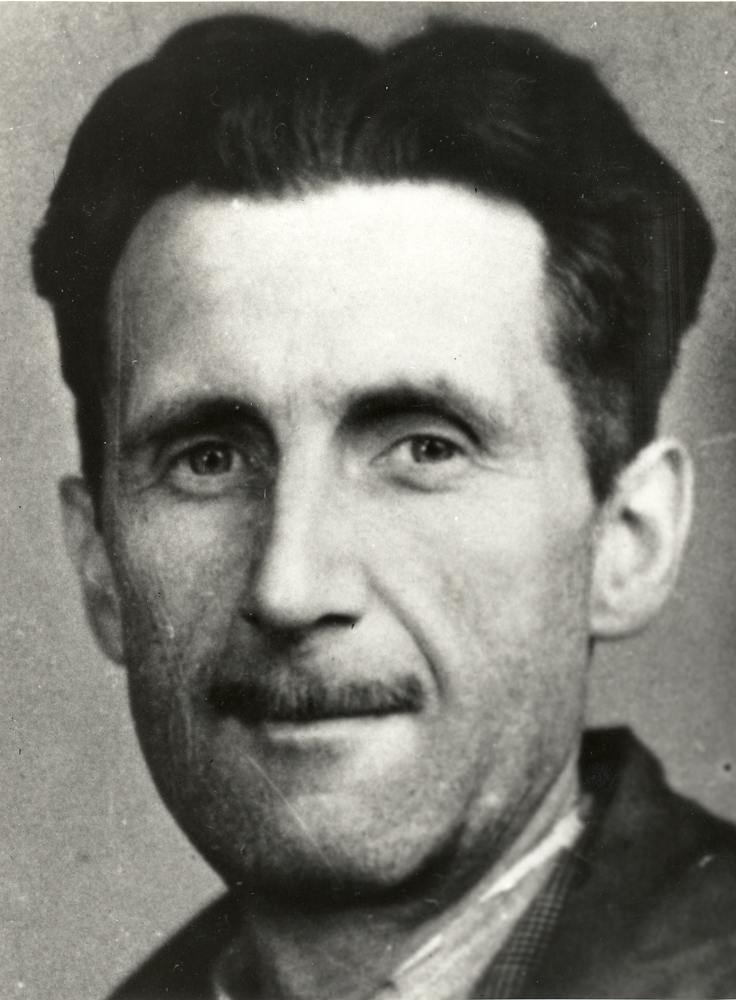

Статья 2
Булгаков Дата публикации 01.01.00
Михаи́л Афана́сьевич Булга́ков (дореф. Михаилъ Аѳанасьевичъ Булгаковъ[1]; 3 [15] мая 1891, Киев, Российская империя — 10 марта 1940, Москва, СССР) — русский и советский писатель, драматург, театральный режиссёр и актёр. Автор романов, повестей и рассказов, множества фельетонов, пьес, инсценировок, киносценариев, оперных либретто.
Статья 3
Оруэлл Дата публикации 01.01.00
Джордж О́руэлл (англ. George Orwell, настоящее имя Эрик Артур Блэр, англ. Eric Arthur Blair; 25 июня 1903, Мотихари, Британская Индия — 21 января 1950, Лондон) — британский писатель, журналист и публицист. Его работы отличаются простым стилем письма, критикой тоталитаризма и поддержкой демократического социализма.
Статья 4
Ремарк Дата публикации 01.01.00
Э́рих Мари́я Рема́рк (нем. Erich Maria Remarque, при рождении Эрих Пауль Ремарк, Erich Paul Remark; 22 июня 1898, Оснабрюк — 25 сентября 1970, Локарно) — немецкий писатель XX века, представитель «потерянного поколения». Его роман «На Западном фронте без перемен» входит в большую тройку романов «потерянного поколения», изданных в 1929 году, наряду с произведениями «Прощай, оружие!» Эрнеста Хемингуэя и «Смерть героя» Ричарда Олдингтона.